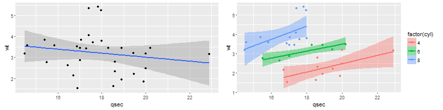

What is this about
- Who is Data Scientist
- Why Big Data
- What is Machine Learning
Anirban Mukherjee
Software Engineer, Tech M
What is this about
Who is Data Scientist?
A Data Scientist has to do the process from start till end
Starting from Getting & Cleaning the Data, it goes like exploring, making reproducible code and generating predictive model


library(knitr)
library(reshape)
dFrame <- melt(HairEyeColor)
kable(head(dFrame[dFrame$Sex == 'Male', ], 4), format = "markdown")
| Hair | Eye | Sex | value |
|---|---|---|---|
| Black | Brown | Male | 32 |
| Brown | Brown | Male | 53 |
| Red | Brown | Male | 10 |
| Blond | Brown | Male | 3 |
\[cov(X, Y) = E[(X - E(X))(Y - E(Y))]\]
\[cov(X, Y) = \frac{1}{n} \sum_{i=1,n}(x - E(X))(y - E(Y))\]
\[cov(X, X) = Var(X) \equiv \sigma^{2}(X)\]
\[cor(X, Y) = \frac{cov(X, X)}{\sigma(X) \sigma(Y)}\]

library(knitr)
kable(head(mtcars, 10), format = "markdown")
| mpg | cyl | disp | hp | drat | wt | qsec | vs | am | gear | carb | |
|---|---|---|---|---|---|---|---|---|---|---|---|
| Mazda RX4 | 21.0 | 6 | 160.0 | 110 | 3.90 | 2.620 | 16.46 | 0 | 1 | 4 | 4 |
| Mazda RX4 Wag | 21.0 | 6 | 160.0 | 110 | 3.90 | 2.875 | 17.02 | 0 | 1 | 4 | 4 |
| Datsun 710 | 22.8 | 4 | 108.0 | 93 | 3.85 | 2.320 | 18.61 | 1 | 1 | 4 | 1 |
| Hornet 4 Drive | 21.4 | 6 | 258.0 | 110 | 3.08 | 3.215 | 19.44 | 1 | 0 | 3 | 1 |
| Hornet Sportabout | 18.7 | 8 | 360.0 | 175 | 3.15 | 3.440 | 17.02 | 0 | 0 | 3 | 2 |
| Valiant | 18.1 | 6 | 225.0 | 105 | 2.76 | 3.460 | 20.22 | 1 | 0 | 3 | 1 |
| Duster 360 | 14.3 | 8 | 360.0 | 245 | 3.21 | 3.570 | 15.84 | 0 | 0 | 3 | 4 |
| Merc 240D | 24.4 | 4 | 146.7 | 62 | 3.69 | 3.190 | 20.00 | 1 | 0 | 4 | 2 |
| Merc 230 | 22.8 | 4 | 140.8 | 95 | 3.92 | 3.150 | 22.90 | 1 | 0 | 4 | 2 |
| Merc 280 | 19.2 | 6 | 167.6 | 123 | 3.92 | 3.440 | 18.30 | 1 | 0 | 4 | 4 |
library(ggplot2)
library(gridExtra)
base <- ggplot(mtcars, aes(qsec, wt))
pt_1 <- base + stat_smooth(method = "lm") + geom_point()
base <- ggplot(mtcars, aes(y = wt, x = qsec, colour = factor(cyl)))
pt_2 <- base + stat_smooth(method = lm, aes(fill = factor(cyl))) + geom_point()
grid.arrange(pt_1, pt_2, ncol = 2)
